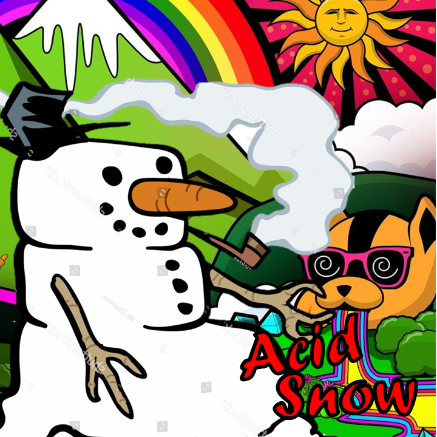

Acid Snow
About Acid Snow
Acid Snow is unlike any of the other strains on our menu, for one very specific reason. In order to explain that reason, we have to talk a little bit about our breeding process. Like most breeders, we use a chemical called Silver Thiosulfate (STS) as a part of our breeding process, to “reverse” the sex of certain female plants. Those reversed plants produce feminized pollen, which we collect in order to pollinate specific batches of females. It’s all pretty standard, but there are some things that make our process a little bit different from most other breeders. Instead of reversing entire plants from female to male, we designate specific branches on each pollen-donor “Dad” to be treated with the STS. Only those treated branches produce will pollen sacs, while the rest of the plant lives it’s life as a completely normal female. Once the reversed branches reach maturity and begin to produce pollen, we use some trade-secret techniques to collect the pollen without any cross contamination. That pollen is often used to create the next generation of a strain, by applying it to other female plants from the same seed batch. For example, in the case of Granite Haze F4, both the “dad” and the females that it pollinated were all Granite Haze F3.
But what happens when the remaining female portion of the “dad” gets treated with it’s own pollen? That’s called self pollination, and instead of creating Granite Haze F4 seeds like the rest of the batch, that single plant will create Granite Haze S4 (the S stands for Self) seeds. At Speedrun, we keep those self pollinated seeds separate throughout each generation, sometimes doing limited releases or sending them out as freebies. In the case of Acid Snow, we ended up crossing the 3rd generation(S3) self pollinated seeds from our Frosted Cherry’Os with the 4th generation (S4) of Granite Haze. Its the only Self Pollinated cross we’ve ever released, and it has some very different characteristics from it’s “cousin” Golden Gun (Frosted Cherry’Os F2 x Granite Haze F5). Acid Snow is extremely vigorous and WILDLY frosty. It’s one of those strains where most people have a hard time even believing it’s an autoflower. It produces lots of dense, golf ball sized flowers are densely caked with trichomes. It also does extremely well when grown outdoors, arguably our strongest outdoor strain to date. The terpene profile is also extremely unique for an autoflower. It will quickly fill your entire house (or back yard) with a heavy, gassy, skunky, burnt tire smell with very distinct notes of sharp, sour, acidic citrus and pine. Those acidic overtones and the insane frost is where Acid Snow gets it’s name. Its a good yielder, but not our highest yielding strain. In good conditions, and when fed well (it’s a very heavy feeder) you can expect yields in the range of ~12 ounces. Acid Snow finishes in 65-75 days, and our strain testers unanimously reported that it has a very sedating effect profile that’s perfect for an evening toke to wind down after a long day. AUTO: NEED TO SELECT 1-2 FOOT ON MYGROW FOR GUIDE
Ready to grow Acid Snow? Build your personalized day-by-day schedule — strain selected, nutrients dialed in, start date set.
Start My Grow